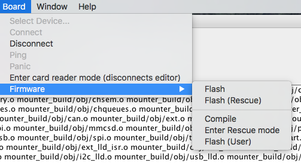

Overview
The Axoloti application contains everything need to install a custom version of the firmware used on the board.
This post covers how to installing custom version of the firmware, and also how to revert the firmware to the current firmware released with the Axoloti software.
Notes
- Firmware is often updated with newer releases of Axoloti, so you may need to keep your custom software up to date.
(so if you update axoloti to a new version and your custom firmware stops working, try to recompile, and if that doesnt work, then try to revert to the factory firmware... it may be the custom firmware needs updating) - When you install new firmware, you always need to recompile patches (they dont change, but they just need to be re-compiled), this is important particularly important to remember if you have uploaded patches to your SD card.
Installing custom software
I assume your axoloti is turned on, and working ok 
a) place the custom firmware directory wherever you want. (I usually put it in my axoloti home folder)
b) in preferences, change the firmware directory, to point to where you have placed the firmware, press ok etc.
(i.e. select the directory... not a file)
{kind=link}
c) EXIT AXOLOT UI and then RESTART UI (this is needed to get the new options below)
d) you will get some warnings about the firmware not existing, needing to be compiled - dont panic
there are now new options on the flash menu, as below...
also the title bar will say (developer)
e) choose Board->Firmware->Compile ... then you will see the firmware compiling, if an error , check you setup the firmware location correctly
f) choose Board->Firmware->Flash(User)
this will do the normal flashing of the axoloti board, that you are used to.
ok, your done... now we test the firmware to see if its working...
Restoring factory firmware
restoring is is trivial
a) select board->firmware->flash (i.e. first option)
b) this will automatically flash the board again with the current 'factory' firmware
it will also automatically, set your preferences to point back to the factory firmware
c) exit axoloti UI, restart UI ... the extra menu options will have magically vanished again 
Note: restoring does not delete the firmware directory, so you can easily go back to it again.
thats it your back to where you started...
Developers
The axoloti software includes all the current source for the firmware, so if you want to try it out, you don't have to go to github to get the source, you will find the firmware in the location specified in the preferences dialog. simply copy it, to a new location,
However, since you will need to possibly update your firmware as axoloti is updated. I would strongly recommend you fork the axoloti repository, and create a new branch with your firmware changes. Then when axoloti is updated, you can pull the changes, and merge them into your branch (and obviously re-test) and release.
Note: for more info on git forking/merging , I refer you to the internet